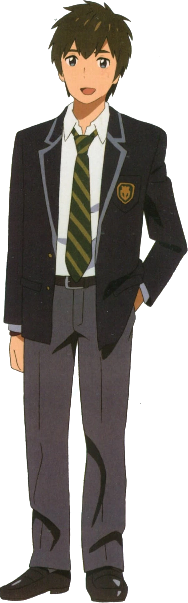

Taki Tachibana (立花 瀧 Tachibana Taki) is the male protagonist of Kimi no Na wa.
He is a 17-year old high-school student who lives a busy lifestyle as he juggles his part-time job at an Italian restaurant,
spends fun times with his friends and hopes for a future in architecture. His lifestyle takes a turn when he starts switching
bodies with a high-school girl named Mitsuha Miyamizu in his dreams, who wished to live as a handsome boy in Tokyo.

| Appearance | Taki is a young man with an average build and height who is noted for being handsome. He has spiky, nape-length brown hair with bangs covering his forehead and dark blue eyes. At times, he is seen wearing band-aids because of his impulsive personality. |
|---|---|
| Personality | Taki is generally a kind, hardworking and caring individual. He is also helpful, responsible and level-headed. Although he is organized and mostly handles everything quite nicely, his busy lifestyle and creative side; being interested in architecture and art and having artistic abilities, can come off as unorganized but hardworking. He can also sometimes be persistent and may even be called sensitive towards others as he is quick to anger. |
| Trivia | The kanji for him given name, Taki (瀧), combines the characters for "water" and "dragon". This serves as another connection between himself and Mitsuha as water is also mentioned in Mitsuha's surname and since the Miyamizu folklore includes mention of a dragon, which symbolizes the destructive power of Tiamat.[4] |